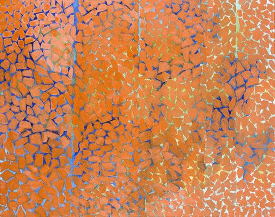

Skip to Content
Introduction
Context
The Ousiders
The Present
A visual examination of the linkages between black abstractionists working during the Black Arts Movement and contemporary black abstract artists working now.
